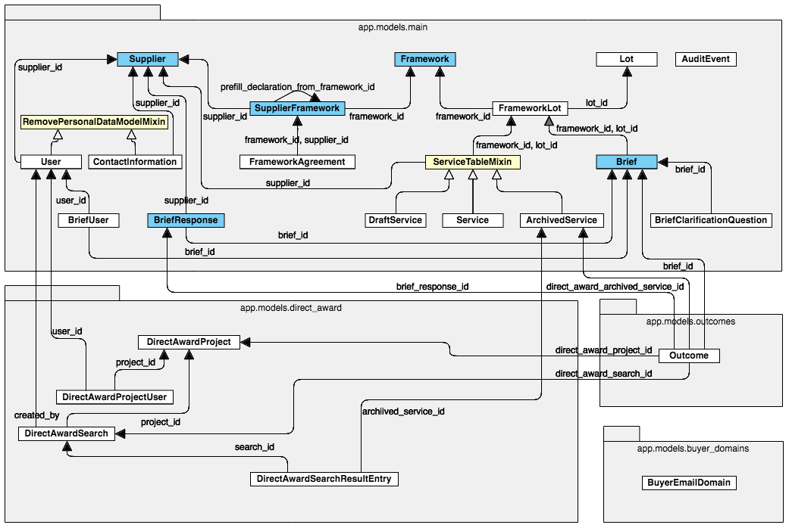

Data model¶
Contents
Overview of the API data model¶
So you’ve imported data into your development database… what have you actually got in there and how does it fit together? This is an overview of how the API sees things:
(White arrows for inheritence, black arrows for foreign key columns with their names. Yellowish classes don’t have corresponding tables in the database. Blueish classes are the common API end-points. The diagram does not include constraints and indexes.)
Entities and what they are¶
There are a relatively small number of key entities that we deal with. If you want a full list of their attributes then
you can check the model files at the /app/models/ subdirectory of the API and/or \d to describe your tables in Postgres. This is intended as
a high-level description of the entities we represent and the relationships between them rather than a detailed specification.
Suppliers¶
Our Suppliers are companies that want to sell things to government via the Digital Marketplace. Any company can sign up
for an account by providing their name, DUNS number and some ContactInformation (name, phone number, website,
email address and postal address). Things are set up in the database so that suppliers can have multiple ContactInformation
entries if a need for that is identified, but at present the frontend apps only allow one to be set per supplier.
Users¶
Our Users model is used to store email addresses and (hashed) passwords of users who can log in to the Digital Marketplace.
Each user has a single role, which can be one of the following:
supplier- users are associated with a supplier account and have a reference to the associated supplier ID. Suppliers have at least one associatedsupplieruser and can have multiple users, all of whom can perform the same set of tasks within a supplier account.
buyer- users are created by government buyers. Buyer accounts are required to create briefs for procuring Digital Outcomes and Specialists services (there is no need to log in to be able to buy from G-Cloud). Unlike supplier users there is no associated “Buyer” entity - buyer accounts are standalone.
admin,admin-manager,admin-framework-manager,admin-ccs-sourcing,admin-ccs-data-controllerandadmin-ccs-category- these roles have access to our admin frontend application and can perform different sets of tasks within the admin app.
Frameworks¶
A framework is an agreement between the government and suppliers that sets out the basic terms under which individual contracts can be awarded to suppliers.
There are two main frameworks that Digital Marketplace is concerned with: the G-Cloud Framework, and the Digital Outcomes and Specialists Framework.
In terms of our data model and apps you can think of Frameworks as being the things that services belong to, and that
govern their lifecycle.
The entries in our frameworks table are technically framework iterations e.g. G-Cloud 8,
Digital Outcomes and Specialists 2, with the framework itself stored as Framework.framework in the table.
There are two main parts to the lifecycle of a framework on the Digital Marketplace:
The “application” stage, when suppliers apply to be on a framework and define the services that they want to provide.
The “live” stage, when buyers can buy services from successful suppliers via the Digital Marketplace.
For more about the framework lifecycle and statuses see Framework lifecycle for developers
Lots¶
Our frameworks are designed for buyers to buy all sorts of things, and Lots are the highest-level categories that
services are put into. Each framework has a set of Lots, and all Services on that framework belong to one of those Lots.
When suppliers define a service they want to supply on a framework the lot is the first thing they choose. Each lot
has a different set of questions to help suppliers define their service (e.g. the “Cloud Hosting” lot has questions
about uptime, security and pricing models, but the “Digital Specialists” lot asks about specialisms, location and day rate).
These are the Lots for our frameworks:
- G-Cloud 4 to G-Cloud 8:
Infrastructure as a Service (IaaS)
Platform as a Service (PaaS)
Software as a Service (SaaS)
Specialist Cloud Services (SCS)
- G-Cloud 9, 10, 11 & 12:
Cloud Hosting
Cloud Software
Cloud Support
- Digital Outcomes and Specialists 1, 2, 3, 4 & 5:
Digital Outcomes [One-Service Lot]
Digital Specialists [One-Service Lot]
User Research Studios
User Research Participants [One-Service Lot]
One-Service Lots¶
Services on some Digital Outcomes and Specialists lots are restricted to one service per lot, and include lot-specific questions that are assessed as part of the framework application. This means that it’s possible for suppliers to fail on particular lots but still be awarded on to the framework overall.
Supplier-Frameworks¶
The SupplierFramework model holds information about Suppliers’ applications to frameworks. When a supplier first
shows interest in applying to a framework (by pressing the big green “Start application” button) a supplier_framework
entry is created by adding a row with the relevant supplier ID and framework ID. Responses to the supplier declaration
questions (one part of the framework application process) are stored in the declaration JSON field as they are
submitted, and when applications close and are assessed the result (i.e. was the supplier awarded onto the framework or
not) is stored in the on_framework field.
Draft Services¶
DraftServices are the services submitted by suppliers as part of their application to be on a framework, and describe
the services that the supplier wants to sell to government. Draft services have an associated Supplier, Framework and
Lot, and a JSON data field that contains the supplier’s responses to the relevant service definition questions for
that framework and lot. Service data POSTed to the API is validated against a JSON schema before being saved - if the
data POSTed to the API doesn’t match the relevant schema for the framework and lot then it returns a validation error and
doesn’t save the data.
Statuses of Draft Services are as follows:
not-submitted - the service could be complete or incomplete, but remains
not-submitteduntil the supplier hits the green button to say they want to submit the service as part of their framework applicationsubmitted - the service is complete and the supplier has hit the green button to say they want to submit the service as part of their framework application
failed - For services on One-Service Lots if any of the lot-specific questions are answered incorrectly then the service is marked as
failed, effectively failing the lot because there is only one service allowed for these lots. Those that answer all lot-specific questions correctly remain assubmitted.
Services¶
Services are the things available to buy on the Digital Marketplace. They begin life as draft services, created by
suppliers during their application to a framework. Once the applications have been assessed and the SupplierFrameworks
marked as on_framework or not the draft services for suppliers marked as on_framework are published to become “real”
services. A new Service ID is generated and stored as a pseudo-foreign key against the original draft service, which are not
deleted when they are published (see commants at lines 1003 & 1214 of api/app/models/main.py).
Services on the G-Cloud framework have a service page on the Digital Marketplace at https://www.digitalmarketplace.service.gov.uk/g-cloud/services/<service_id> and are indexed in Elasticsearch to be found by buyers using our search pages.
Services on the Digital Outcomes and Specialists framework are not shown individually on the Marketplace and can not be searched for, but instead are used to determine which suppliers are eligible to apply to which opportunities (A.K.A. Briefs).
Statuses of Services can be confusing due to historical reasons *, and are as follows:
published - most services have this status. It means they are available to buy on the Digital Marketplace.
enabled - suppliers can turn off services that they no longer wish to provide. When a supplier turns off one of their services it is assigned the status
enabledand (for G-Cloud services) removed from the search index.disabled - administrators can turn off services that are not appropriate for a framework using the admin console. When an admin user turns off a service it is assigned the status
disabledand (for G-Cloud services) removed from the search index. The URL for that service is still accessible and returns a410status code and a banner saying the service is no longer available.deleted - developers can hide services completely from our buyer and supplier users through the API. This is different to the status
disabledin that accessing the URL for adeletedG-Cloud service will return a 404 and not show any information about the service. Setting a service to statusdeletedshould only be done when we are requested by CCS to delete all information about a supplier. We should instead use statusdisabledfor the majority of service suspensions.
- *
It used to be the case that suppliers could re-activate a service after disabling it, so enabled services could be turned back on by the supplier, whereas services disabled by an admin user could not. Things have changed now so that enabled and disabled statuses are functionally equivalent in the frontend - to turn any service back on suppliers need to raise a support ticket, but both statuses still exist in our data.
Archived Services¶
ArchivedServices are used to keep track of changes to services over time. Whenever a change is made to a service a
snapshot of the service is stored as an archived service, allowing us to find how a service looked at a particular time.
The archived services are also used to show the “before and after” diff page in the admin app, so that CCS can review
and acknowledge any edits that are made to services.
Statuses of ArchivedServices are the same as for the Services they are copies of.
Briefs¶
Buyers on the Digital Outcomes and Specialists framework can create Briefs to describe the work they want done.
(Somewhat confusingly we never use the word “brief” in any user-facing pages - they are known as requirements
to buyers as they write and publish them, and opportunities to suppliers as they view them to find relevant pieces
of work).
Briefs belong to a Framework and a Lot on that framework, and are associated with the User that created them via the
BriefUser model (only users with role buyer can create briefs).
While a brief has status live, suppliers can submit clarification questions through the Digital Marketplace. These questions
are emailed to the associated buyer and the buyer must publish both the question an answer as a BriefClarificationQuestion.
These are simple entities that have a Brief ID and two text fields for the supplier’s question and buyer’s answer. All
BriefClarificationQuestion records are shown in the “Questions asked by suppliers” section of the opportunity page.
Statuses of Brief records are not stored as an explicit field in the database, but are a “hybrid property” derived from a
combination of our Brief and BriefResponse models as follows:
draft - when first created by a buyer, a brief has
draftstatus.live - when the buyer hits the “Publish” button for their brief a
published_attimestamp is set in the database. Briefs can be published for either one or two weeks, so once thepublished_attime exists theapplications_closed_attime can be calculated as either one or two weeks from thepublished_atdate. A brief has statusliveas long aspublished_athas been set and the current time is before theapplications_closed_attime. During theliveperiod suppliers can apply to do the work specified in the brief.closed - if
published_atis set and the current time is after theapplications_closed_attime and the buyer has not updated the outcome of the brief, then the brief isclosed. Suppliers can no longer apply to it and the buyer should evaluate the responses they received and award the work to the best supplier.withdrawn - sometimes buyers decide they don’t want to go ahead with their procurement. In this case they can raise a support ticket to withdraw their brief. A
withdrawn_attimestamp is set in the database, and any brief with awithdrawn_attime has statuswithdrawn.awarded - once a buyer has shortlisted and chosen a supplier, they must provide the name of the supplier and the contract details (contract value and start date). These contract details are stored on the winning supplier’s BriefResponse (see below). If a brief has a corresponding BriefResponse with these details, its status is
awarded.cancelled - if the buyer did not go ahead with the brief (e.g. they no longer have the budget) then they still have to let us know the outcome via a form on their dashboard. A
cancelled_attimestamp is set and the brief has statuscancelled.unsuccessful - similar to the
cancelledstatus, if the buyer could not find a suitable supplier, (e.g. no qualified suppliers applied) then the buyer must let us know via a form on their dashboard. Anunsuccessful_attimestamp is set and the brief has statusunsuccessful.
The status of the Brief model is also denormalized into the ElasticSearch index by the API, whenever a brief is published, or
whenever a published brief changes. This denormalization is also updated when the briefs are indexed overnight, which means
the rollover from live to closed works as expected. Should briefs ever need to change status at some other time of day
than around midnight, this process would need to be reviewed.
Brief Responses¶
When suppliers respond to an opportunity (Brief) to apply for the work a BriefResponse is created that associates the
Brief ID and Supplier ID, and that stores the supplier’s responses to the brief in a data JSON field. When the brief
closes all the BriefResponse records received can be downloaded by the buyer as a spreadsheet for evaluation.
- Similar to Briefs, the status of a BriefResponse is a hybrid property, derived as follows:
draft - when a supplier begins their application to a brief, the BriefResponse has a default status of
draft.submitted - when a supplier submits their application to a brief, the
submitted_atdatestamp is set and the BriefResponse has statussubmitted.pending-awarded - when a buyer has selected the BriefResponse as their winning supplier, but has not yet given any contract details via the (multi-page) form on their dashboard, the BriefResponse has status
pending-awarded.awarded - when a buyer has selected the BriefResponse as their winning supplier, and has confirmed the contract value and start date, an
awarded_attimestamp is set on the BriefResponse and it has statusawarded.
Direct Award Projects¶
G-Cloud is a Direct Award framework that encapsulates a catalogue of services which buyers can search and filter through
when looking to procure cloud commodity services. This process requires gradually refining searches with different
criteria. A DirectAwardProject encapsulates a number of searches and other activity that a buyer is undertaking
to fulfill a single procurement.
Users are associated with projects through the DirectAwardProjectUser model.
Direct Award Searches¶
A DirectAwardProject record can contain multiple searches relating to a single procurement. Only one search can be active
at a time in a given DirectAwardProject, and that search represents the set of criteria that they intend to use to
create a list of suppliers that are eligible to provide the required services and which must be compared to determine
who will be awarded the contract.
When a search is saved to a DirectAwardProject, the current timestamp is recorded along with the Search API URL
corresponding to the search performed. The newly saved search is marked as active and all other records are flipped
to inactive.
Direct Award Search Result Entries¶
When a DirectAwardProject is downloaded, the current active search is re-run to retrieve the list of matching
services in the catalogue at that moment in time. This list of services is recorded in the table
DirectAwardSearchResultEntry model against the archived service ID and the DirectAwardSearch ID.
Audit Events¶
We store AuditEvent records for all actions taken on the Marketplace that we might need to trace back to find who did them †,
such as:
User account creation/update
Draft service creation/update/deletion
Service updates
Brief creation/publishing/withdrawl
Suppliers registering for frameworks, sending clarification questions and uploading framework agreement documents
Admin users disabling services, countersigning framework agreement documents
The AuditEvent table deliberately doesn’t store any foreign keys directly, but does store an object_type and object_id
that can be used to find the related database objects if necessary.
- †
You can see the full list of AuditTypes at https://github.com/alphagov/digitalmarketplace-apiclient/blob/main/dmapiclient/audit.py